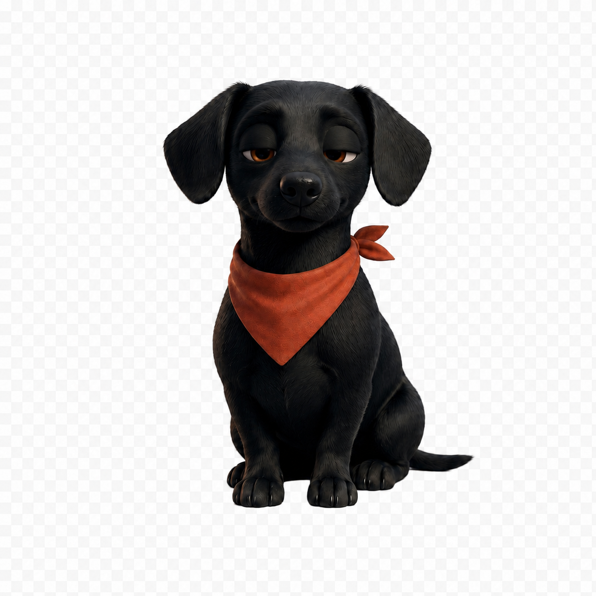

O que vai sair da
sua cozinha hoje?
Me conta o que tem aí. Eu farejo uma boa ideia.

Resultados
Explore o ecossistema
Pra cada dia,
Pra cada dia,
uma área diferente
Receitas em destaque
Escolha uma e
Ver todas →
Escolha uma e
comece agora
Modo Cozinha
Cozinhe com o
Cozinhe com o
celular do seu lado.
Passo a passo grande, tela que não apaga, vire o celular e a receita acompanha. Feito pra funcionar com as mãos ocupadas de farinha.

Nossa mascote
Saber mais sobre ela
Conheça a Jurema.
Ela é uma salsichinha preta, curiosa, carinhosa e levemente gulosa. Não é só uma mascote — é quem te acompanha na cozinha.
Ela reage ao que você faz, sugere receitas, comemora quando você termina e nunca te julga por queimar a cebola de vez em quando.
"A cozinha não precisa ser perfeita. Precisa ser sua."